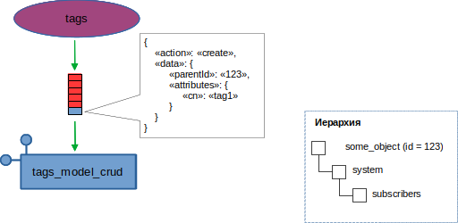
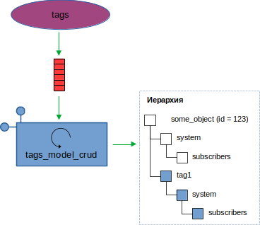
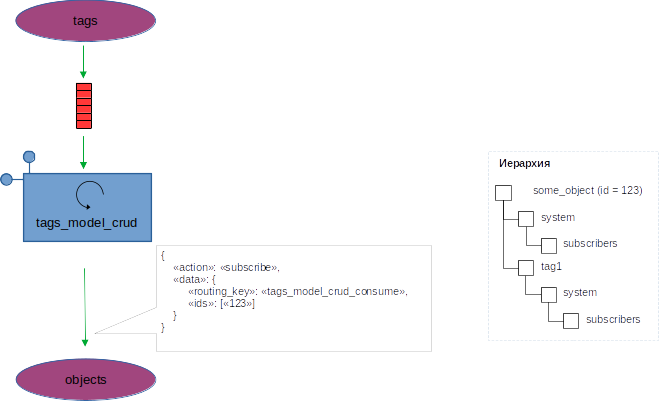
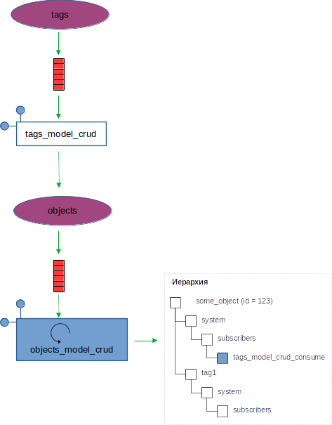

Архитектура платформы
Общее описание
Архитектура платформы обуславливается, в значительной степени, создаваемой ей моделью технического объекта.
Модель технического объекта состоит из двух частей: статической и динамической. Статическая модель описывает сущности и экземпляры этих сущностей, а динамическая - процессы, протекающие между экземплярами сущностей.
Статическая модель
Статическая модель технических объектов, особенно в промышленности, хорошо описывается иерархической структурой. К примеру:
Предприятие → Цех → Участок →
Технологическая линия → Агрегат.
Поэтому в архитектуре появляется LDAP-сервер, с помощью которого строится иерархия.
LDAP-сервер
Каждый узел в иерархии LDAP-сервера имеет свой определённый класс. На рисунке ниже представлена иерархия узлов.
В скобках указан класс узла.
Иерархия
На рисунке выше показан пример иерархии. Белыми квадратами показаны экземпляры
сущности object (класс в иерархии - prsObject), голубыми - теги,
красными - тревоги (alerts), зелёными - методы.
Примечание
Имена всех классов в иерархии строятся по принципу: prs<Имя сущности>.
Префикс prs облегчает фильтрацию классов, добавленных в схему сервера
платформой.
Имена атрибутов также имеют префикс prs.
Главный узел -
Участок металлообработки. Класс -prsObject.Участоксодержит два тега:Суммарная мощность(всех станков на участке);Температура помещения.
Тег
Участок металлообработки.Суммарная мощностьимеет метод для вычисления суммы мощностей всех станков на участке.Тег
Участок металлообработки.Температура помещенияимеет тревогуПревышение температуры, которая срабатывает при превышении некоторого установленного значения.У объекта
Участок- два дочерних объекта:Станок 1иСтанок 2.Каждый станок имеет два тега:
Потребляемая мощность;Ток фазы.
Tег
Ток фазыимеет тревогуПревышение тока, которая, в свою очередь, имеет методОповещение.
Таким образом, в примере иерархии содержатся экземпляры четырёх сущностей:
objects, tags, alerts, methods.
Примечание
В иерархии LDAP-сервера содержатся сущности, относящиеся не столько к модели самого технического объекта, сколько к модели информационной системы. Это такие сущности, как: хранилища данных (dataStorages), коннекторы (connectors), расписания (schedules).
Сервисы
Каждая сущность, присутствующая в иерархии, управляется своим сервисом.
Сервисы
В действительности, каждый сервис - это, в общем случае, набор из четырёх независимых микросервисов:
Микросервисы
<сущность>_api_crud
Микросервис, принимающий от пользователя или, в общем, от любых внешних клиентов, запросы на создание, чтение, обновление, удаление экземпляров сущности (команды CRUD).
Главная задача этого микросервиса - принять запрос от клиента и проверить
корректность параметров запроса (в случае, если миросервис реализован
на языке Python, то удобно для этих целей пользоваться модулем pydantic).
Вторая задача - отправить соответствующий запрос микросервису
<сущность>_model_crud:
<сущность>_api_crud
Выделение описанной функциональности в отдельный микросервис облегчает управление версиями API, позволяя, в том числе, работать одновременно нескольким версиям. Вопрос только в запуске/остановке соответствующего микросервиса.
<сущность>_model_crud
Микросервис, работающий с узлами сущности в иерархии. Именно этот сервис реализует непосредственную работу с иерархической моделью, взаимодействуя с LDAP-сервером.
<сущность>_model_crud
<сущность>_app
Иерархическая модель - не вещь в себе. Узлы в ней определяют, как функционирует
модель технического объекта.
То есть микросервис <сущность>_app определяет ту функциональность, ради
которой экземпляры сущности и создаются.
Например, для тегов это, в первую очередь, функции записи/чтения данных.
Для тревог - функциональность по инициации/квитированию/прападанию тревог.
Таким образом, сервис <сущность>_app читает из иерархии описания
узлов соответствующего типа и работает согласно этим описаниям.
Например, к тегу Температура помещения привязана тревога
Превышение температуры. Так вот именно сервис alerts_app будет
отслеживать значение температуры и генерировать, при необходимости, тревогу.
<сущность>_app
<сущность>_app_api
Микросервис предоставляет клиентам доступ к функциональности сервиса
<сущность>_app. В случае тегов - это команды data/set, data/get.
В случае тревог - команды квитирования, получения списка активных тревог и т.д.
<сущность>_app_api
Базовые сущности, входящие в ядро МПК Пересвет
Объекты
Примечание
Сущность objects, класс в иерархии prsObject.
Базовый узел в иерархии. Каждый узел сущности objects может иметь
любое количество дочерних узлов этой же сущности. Таким образом обеспечивается
возможность создания иерархии объектов любой сложности.
Теги
Примечание
Сущность tags, класс в иерархии prsTag
Тег - это параметр объекта. Например: температура, давление, расход, и т.д.
Теги бывают обычные, в которые данные поступают из внешних источников (датчики, SCADA, ручной ввод и т.д.), а также рассчитываемые.
Например:
тег
Потребляемая мощностьу объектаКотёлв системе «умного дома» - обычный тег, данные в который поступают от «умной» розетки по протоколу «ZigBee»;тег
Общий расход газа на собственные нуждыобъектаПромысел- вычисляемый и является суммой затрат газа на котельные промысла, а также потерь на факел;
Но ничто не мешает тегу быть одновременно и обычным, и рассчитываемым. То есть данные в тег могут поступать из внешнего источника, редактироваться пользователем, а также, в определённых случаях, рассчитываться.
Новое значение тега может инициировать расчёт значений других тегов. В таком случае в иерархии указывается, расчёт каких тегов инициируется изменением значения данного тега.
Тревоги
Примечание
Сущность alerts, класс в иерархии prsAlert
Тревога - событие, возникающее при определённых условиях. Тревоги применяются, в основном, для сигнализации о каких-то событиях (не обязательно критичных и плохих, как может показаться из названия сущности, просто так сложилось в АСУТП).
События возникновения тревог, также как и события изменения тегов и события расписаний, могут запускать выполнение определённых процессов.
Экземпляр сущности alerts обязательно привязан к какому-либо тегу.
Каждое изменение значения тега, к которому привязаны тревоги, будет приводить к
пересчету условий возникновения тревог. Если условие выполняется, то произойдёт
событие возникновения тревоги.
Например:
Объект «Паропровод». У него есть тег - «Температура пара». К тегу привязана тревога «Превышение температуры». В условиях тревоги указано, что она должна возникать при превышении значения температуры в 120 ° C.
Таким образом, каждое изменение тега будет приводить к проверке условия, что новое значение тега превышает значение в 120 ° C. Если условие выполняется, то произойдёт событие возникновения тревоги.
Обычно в АСУТП тревоги бывают четырёх типов: LOLO-LO-HI-HIHI.
То есть:
LOLO- нижний критичный уровень;LO- нижний предупредительный уровень;HI- верхний предупредительный уровень;HIHI- верхний критичный уровень.
В отличие от принятой практики, МПК Пересвет допускает создание любого количества тревог, привязанных к тегу.
Кроме того, существуют дополнительные возможности при создании тревог:
отложенные тревога; тревога, которая возникает спустя некоторое время после изменения значения тега на критичное
Например: Тревога должна возникать, если температура пара в паропроводе превышает 120 ° C на протяжении не менее двух минут. Иначе ситуация считается нормальной.
сложные тревоги; это такие тревоги, которые имеют сложные условия возникновения; к таким тревогам привязывается вычислительный метод, который определяет, должна ли возникать тревога; такие тревоги позволяют учитывать значения нескольких тегов, а также вообще любые дополнительные условия.
Тревоги могут быть квитируемые и не квитируемые.
Квитируемые тревоги - это такие тревоги, которые не исчезают до тех пор, пока пользователь не отметит, что он их заметил (квитировал)
Например: Тревога «Превышение температуры» у паропровода должна быть обязательно замечена оператором, потому как возникновение такой тревоги влечёт за собой необходимость проведения определённых работ по обслуживанию паропровода.
Поэтому даже после снижения температуры ниже 120 ° C тревога не пропадёт, пока оператор не отметит, что заметил эту тревогу.
Методы
Примечание
Сущность methods, класс в иерархии prsMethod
Методы применяются:
для вычисления значений тегов;
для вычисления условий возникновения аварий;
привязываются к событиям расписания, инициируя, таким образом, выполнение определённых вычислений/действий по расписанию;
для запуска каких-либо процессов (рассылка почты, диспетчерские процессы при возникновении определённых событий и т.д.)
Хранилища данных
Примечание
Сущность dataStorages, класс в иерархии prsDataStorage
Сущность относится не к модели технического объекта, а к модели информационной системы.
Хранилище данных - это база данных, в которой хранятся исторические значения тегов и тревог.
В настоящий момент поддерживаются PostgreSQL и Victoriametrics.
При написании соответствующего драйвера могут поддерживаться любые виды хранилищ.
Платформа поддерживает возможность одновременной работы нескольких хранилищ, причём разных типов.
Коннекторы
Примечание
Сущность connectors, класс в иерархии prsConnector
Коннектор - специальная программа, являющаяся поставщиком данных от какого-либо источника.
Обычно реализует собой возможность чтения данных по какому-либо протоколу (modbus, OPC и т.д.).
Коннектор устанавливается как можно ближе к источнику данных, инициирует связь с платформой по протоколу Websocket и передаёт в платформу счианные из источника данных значения.
В свою очередь, принимает от платформы по этому же каналу сообщения об измнениях параметров тегов и т.д.
Константы
Примечание
Сущность constants, класс в иерархии prsConstant
Константы - определённые значения, используемые в рамках всей системы. Передаются в вычислительные методы.
Например: константа pieColors: словарь, в котором указывается набор
цветов для отображения «пирогов» в отчётах.
Расписания
Примечание
Сущность schedules, класс в иерархии prsSchedule
Расписание определяет моменты возникновения событий, привязанных ко времени. Эти события могут вызывать выполнение определённых методов:
расчёт вычисляемых тегов;
запуск выполнения внешних методов.
«Комплекты» сервисов
Необязательно для каждой сущности должен существовать комплект из четырёх микросервисов.
Например:
Константы - это сущность constants. Имеет только два сервиса:
constants_api_crud - API для создания-чтения-обновления-удаления констант и
constants_model_crud - собственно, сам функционал для работы с иерархией.
Никакой собственной функциональности у констант нет. Они существуют только для
того, чтобы передаваться в методы. То есть, используются при работе сущности
methods.
Другой пример - сущность connectors, коннекторы. Имеет три микросервиса:
connectors_api_crud, connectors_model_crud, connectors_app.
Микросервиса connectors_app_api нет, так как connectors_app
не предоставляет никакой функциональности внешним клиентам. Задача
connectors_app - поддержание связи по веб-сокету с коннекторами и приём
от них данных с дальнейшей отсылкой в платформу.
Ещё один пример - хранилища данных, сущность dataStorages. Также не имеет
сервиса datastorages_app_api, но имеет много разных сервисов
datastorages_app, каждый из которых реализует свой тип базы данных.
Другие сервисы
Платформа спроектирована таким образом, что допускает расширение списка сущностей, которые могут присутствовать в статической модели и, соответственно, внутри иерархии.
Для каждой новой сущности необходимо необходимо создать свой класс в схеме LDAP-сервера и разработать комплект микросервисов, взяв за основу базовые классы.
Экземпляры сущности в иерархии могут создаваться:
Внутри своего базового узла. Например:
основная иерархия - модель технического объекта, строится внутри узла
objects;список хранилищ данных - внутри узла
dataStorages.
Внутри базовой иерархии - модели технического объекта. Например:
тревоги: тревоги могут создаваться только внутри узлов класса
prsTag, так как тревоги существуют только в привязке к тегам;методы: могут быть привязаны к тегам или тревогам.
Внутри своего базового узла или внутри базовой иерархии. Примером здесь могут служить теги. Теги, чаще всего, создаются внутри основной иерархии, в качестве дочерних узлов для узлов класса
prsObjects.Но также возможны простые случаи применения платформы, для автоматизации совсем небольших объектов, где нет необходимости создавать иерархию объектов, то есть для автоматизации достаточно создать несколько тегов.
В этом случае теги могут быть созданы линейным списком внутри узла
tags.
Хранилища данных
Значения тегов и тревог записываются в хранилища данных. В настоящий момент поддерживаются два типа хранилищ: PostgreSQL и Victoriametrics. Для поддержки нового типа хранилища необходимо написать соответствующий микросервис.
Хранилища данных
Допускается одновременная работа нескольких хранилищ данных, как одного типа, так и разных. Таким образом, можно хранить историю значений тегов и тревог в разных хранилищах.
Брокер очередей сообщений
Таким образом, платформа представляет собой большое количество микросервисов.
Более того, одновременно может быть запущено несколько экземпляров каждого микросервиса, причем на разных серверах. Этим реализуется масштабируемость и высокая доступность (high availability) платформы.
Микросервисы работают не сами по себе, они взаимодействуют. Реализовывать внутри каждого микросервиса связь со всеми необходимыми ему микросервисами - непродуктивно.
Для реализации общения между микросервисами в архитектуру платформы добавлен брокер очередей сообщений - RabbitMQ.
Брокер сообщений
Внимание
Для понимания системы общения внутри платформы необходимо прочитать (не обязательно полное) руководство на RabbitMQ, с тем, чтобы хорошо разбираться в терминах:
обменник (exchange), а также в их типах (FANOUT, DIRECT, TOPIC);
очередь (queue);
привязка и ключ маршрутизации (binding, routing key).
Обменники сервисов
Как упоминалось выше в разделе Сервисы, для каждой сущности создаётся, в общем случае, группа из четырёх микросервисов.
Примечание
Рекомендуемый подход: каждая группа сервисов для сущности имеет свой отдельный обменник.
Каждый микросервис, стартуя, создаёт в этом обменнике очередь, в которой будет ожидать управляющие команды. Также через этот обменник сервис публикует свои сообщения, указывая в качестве ключа маршрутизации указанную в конфигурации строку.
Конфигурирование
Далее на рисунках показан рекомендуемый подход к конфигурированию системы сообщений.
Начнём с группы сервисов objects.
Сервис objects_model_crud.
На рисунке видим, что сервис objects_model_crud:
Публикует в обменник
objectsсвои сообщения сrouting_key = objects_model_crud_publish.Создаёт очередь
objects_model_crud_consumeи делает ей привязку с таким же именем. В этой очереди сервис ожидает сообщения.
Таким образом, получаем следующую конфигурацию обменников для сервиса
objects_model_crud:
{
# блок "публикаций"
"publish": {
# главный обменник;
# в следующих реализациях, возможно, потребуются дополнительные
# обменники, они будут описаны в своих ключах
"main": {
# имя обменника
"name": "objects",
# тип всех обменников - direct, но возможно, в классах-наследниках
# потребуются другие типы, поэтому тип указываем явно
"type": "direct",
# ключ маршрутизации по умолчанию, но, для большей гибкости,
# также задаём его имя
"routing_key": ["objects_model_crud_publish"]
}
},
# блок "потребления"
"consume": {
"main": {
"name": "objects",
"type": "direct",
"queue_name": "objects_model_crud_consume",
"routing_key": ["objects_model_crud_consume"]
}
}
}
Добавляем в группу сервис objects_api_crud:
Сервис objects_api_crud.
Логика та же, что и у предыдущего сервиса.
Предупреждение
На рисунке видно, что objects_api_crud может принимать
сообщения по протоколу HTTP(S) и из очереди.
В текущей реализации команды CRUD принимаются только по протоколу HTTP(S).
Конфигурация сервиса аналогична предыдущей, за исключением имён очередей и ключей маршрутизации:
{
"publish": {
"main": {
"name": "objects",
"type": "direct",
"routing_key": ["objects_api_crud_publish"]
}
},
"consume": {
"main": {
"name": "objects",
"type": "direct",
"queue_name": "objects_api_crud_consume",
"routing_key": ["objects_api_crud_consume"]
}
}
}
Обратите внимание, что, так как сервис objects_model_crud ожидает сообщения
от сервиса objects_api_crud, то к его consume-очереди
мы добавляем дополнительный ключ маршрутизации: objects_api_crud_publish.
Таким образом, конфигурация сервиса objects_model_crud становится такой:
{
"publish": {
"main": {
"name": "objects",
"type": "direct",
"routing_key": ["objects_model_crud_publish"]
}
},
"consume": {
"main": {
"name": "objects",
"type": "direct",
"queue_name": "objects_model_crud_consume",
"routing_key": [
"objects_model_crud_consume",
"objects_api_crud_publish"
]
}
}
}
Логика сообщений при создании, обновлении и удалении узлов
Рассмотрим следующую ситуацию.
Допустим, у нас есть иерархия и в этой иерархии - узел класса
prsСущность_1. Через некоторое время была создана группа сервисов
для работы с новой сущностью Сущность_2, причём узлы-экземпляры этой
сущности являются дочерними по отношению к узлам сущности Сущность_1.
Таким образом, Сущность_2 разработана позже и Сущность_1 ничего
не «знает» о наличии Сущность_2.
Узел_1 (prsСущность_1)
├ Узел_2 (prsСущность_2)
└ Узел_3 (prsСущность_2)
Далее допустим, что в сервис Сущность_1_api_crud приходит команда на
удаление узла Узел_1. Команда затем поступает в сервис
Сущность_1_model_crud, который и выполняет удаление узла.
При этом удаляется полностью вся иерархия под узлом Узел_1.
Соответственно, сервисы группы Сущность_2 остаются в полном неведении
о том, что «их» узлы тоже удалены.
Не смотря на то, что сервис Сущность_1_model_crud посылает после удаления
узла сообщение c "action": "deleted", на которое подписан сервис
Сущность_2_app, Сущность_2 не может корректно обработать удаление
«своих» узлов, так как они уже удалены из иерархии и информация о них
потеряна.
Для избежания этой коллизии процесс удаления узла сущности реализован следующим образом.
При старте сервис
сущность_2_model_crudуведомляет сервиссущность_1_model_crudо том, что перед удалением или изменением узловСущность_1его, то есть сервиссущность_2_model_crud, необходимо уведомить.Сервис
сущность_1_model_crudхранит список заинтересованных сервисов.Перед изменением или удалением «своего» узла сервис
сущность_1_model_crudпосылает запросы типа RPC всем подписавшимся сервисам (ниже - пример последовательности запросов при удалении узла, при этом в теле запроса указывается id удаляемого узла):may_delete: Можно ли удалять узел? В ответе от каждого заинтересованного сервиса должен прийти ответ: да или нет. Если хотя бы один сервис пришлёт ответ «нет», то узел не будет удалён;deleting: в случае, если на предыдущее сообщение все заинтересованные сервисы ответили «да», то посылается это сообщение, уведомляя все заинтересованные сервисы о удалении узлаУзел_1; в процессе обработки этого сообщения все заинтересованные сервисы (сущность_2_model_crud) корректно удаляют «свои» узлы из иерархии и отсылают ответ сервисусущность_1_model_crudо завершении работы по удалению своих узлов.
После выполнения запроса
deleting, дождавшись ответа от всех заинтересованных подписчиков, сервиссущность_1_model_crudудаляет узелУзел_1и рассылает через свой обменниксущность_1_model_crud_pubсообщение об удалении узлаУзел_1.
Предупреждение
Остаётся проблема: если между запросами may_delete и deleting
произошло что-то, что накладывает дополнительные ограничения на удаление
узла. Например, произошла подписка нового сервиса.
Решение проблемы откладываем на будущие версии.
Рассмотрим сказанное выше на примере сервисов
tags_model_crud и objects_model_crud:
Сервис
tags_model_crudполучает сообщение о создании нового тега:В процессе обработки сообщения
tags_model_crudсоздаёт в иерархии новые узлы:…и посылает в обменник
objectsсообщение о подписке:Сервис
objects_model_crud, получив это сообщение, добавляет в узелsubscribersузелtags_model_crud_consume:Теперь при изменении/удалении объекта «123» сервис
objects_model_crudпосылает всем подписавшимся RPC-сообщения:may_delete. В теле сообщения указывается id объекта для удаления. В полеreply_toobjects_model_crudуказываетrouting_keyдля очереди, в которой будет ожидать ответ.Получив сообщение
may_delete,tags_model_crudищет теги, привязанные к удаляемому объекту и определяет, можно ли их удалить. Для этого он сам посылает сообщениеmay_deleteуже своим подписчикам, указывая удаляемые теги.Если хотя бы от одного подписчика придёт ответ
no, что означает, что объект удалять нельзя, то процедура прервётся.Если все подписчики прислали ответ
ok, тоobjects_model_crudрассылает всем новое сообщение -deleting. Получив это сообщение,tags_model_crudдолжен выполнить работу по удалению всех тегов удаляемого объекта (при этом сам должен разослать сообщениеdeletingвсем своим подписчикам).После того, как в ответ на
deletingвернулись ответыokот всех подписчиков,objects_model_crudудаляет объет.objects_model_crudпосылает сообщениеdeleted.
Таким образом, сервис <сущность>_model_crud имеет следующую базовую
конфигурацию обменников:
{
"publish": {
# основной обменник, в который сервис шлёт свои сообщения
"main": {
# как правило - один обменник на всю группу сервисов
# для одной сущности
"name": "<сущность>",
"type": "direct",
"routing_key": "<сущность>_model_crud_publish"
}
},
"consume": {
# главный обменник, от которого сервис ждёт управляющие команды
"main": {
"name": "<сущность>",
"type": "direct",
"queue": "<сущность>_model_crud_consume",
"routing_key": "<сущность>_model_crud_consume"
}
},
# блок описания обменников тех сущностей, на которые должен
# подписаться сервис
"subscribe": {
# сущность, уведомления об изменение/удаление узлов которой
# требуются сервису
"<сущность_2>": {
# в этот обменник сервис будет посылать сообщение "subscribe"
"publish": {
"name": "<сущность_2>",
"type": "direct",
"routing_key": "<сущность_2>_model_crud_consume"
},
# обменник, из которого сервис будет получать уведомления об
# изменениях узлов
# (к этому обменнику, с указанным routing_key будет привязана
# главная очередь сервиса с управляющими командами)
"consume": {
"name": "<сущность_2>",
"type": "direct",
"routing_key": "<сущность_2>_model_crud_publish"
}
}
}
}
Типовые сообщения сервисов
Примечание
В таблицах сообщений предполагаем следующее:
Обменник, в который публикует сообщения сервис, имеет имя
<сущность>.Если в колонке
RPCстоит плюс, значит, посылающий сообщение сервис ожидает ответ. В этом случае у сообщения выставлены параметрыreply_toиcorrelation_id, поэтому их не указываем в таблицах.Формат тела сообщений (за исключением ответов при RPC):
{ "action": "<some_action>", "data": { } }
где
action- тип команды,data- параметры команды
<сущность>_model_crud
Publish
Consume
Все сообщения для сервиса приходят в очередь <сущность>_model_crud_consume,
routing_key = <сущность>_model_crud_consume.
action |
RPC |
Описание |
|---|---|---|
subscribe |
- |
Сообщение приходит от другого сервиса, который заинтересован |
Тело сообщения{
"action": "subscribe",
"data": {
"routing_key": "<some_routing_key>"
"id": ["<id_1>", "id_2"]
}
}
|
||
unsubscribe |
- |
Сообщение приходит от другого сервиса, который сообщает |
Тело сообщения{
"action": "unsubscribe",
"data": {
"routing_key": "<some_routing_key>"
"id": ["<id_1>", "id_2"]
}
}
|
||